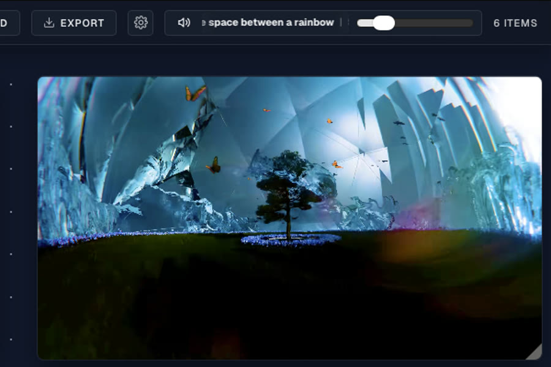

01 · Spatial canvas
Drop media into an unbounded workspace
Images and video are arranged directly on an effectively infinite canvas rather than sorted into folders. Position and grouping become the organizing structure.
- Drag, drop, and freely arrange video and image clips
- Pan and zoom across a non-linear workspace
- Item count and canvas state tracked in the HUD